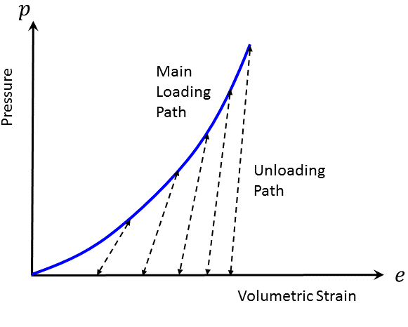

双屈服模型
该模型通过应变软化/硬化模型中除剪切与拉伸破坏包络之外的体积屈服面（或称“帽盖”）计入等向压力引起的永久体积变化。为简便起见，由“帽盖压力” \(p_c >\) 0 定义的帽盖面与剪应力无关；在剪应力-平均应力图上它是一条竖直线。帽盖压力的硬化行为由体积塑性应变激活，并遵循 用户提供表格（user-supplied table） 中规定的分段线性法则。随塑性体积应变发展，切线体积模量与剪切模量按特定法则演化，该法则由一个假定为常数的因子 \(R\) 定义，即弹性体积模量与塑性体积模量之比。
公式
除应变软化模型相关参数外，只需再增加两个材料参数与一个表格：
- \(p_c\) 的初值，对应材料过去经历过的最大平均压力；
- 大于 1 的 \(R\) 值，控制体积卸载时应力-应变曲线的斜率（土力学中称为“回弹”线）；以及
- “硬化曲线”的表格表示，该曲线把帽盖压力 \(p_c\) 与塑性体积应变 \(e^{pv}\) 关联。
因此，在双参数模型所施加的约束范围内，可模拟任何由试验室测定的硬化性状。
增量弹性定律
在该模型的 FLAC3D/3DEC 实现中，使用主应力 \(\sigma_1\)、\(\sigma_2\)、\(\sigma_3\)。主应力与主方向由应力张量分量求得，并按下式排序（回想压应力为负）
相应的主应变增量 \(\Delta e_{1}, \Delta e_{2}, \Delta e_{3}\) 被分解为：
其中上标 \(e\) 与 \(p\) 分别指弹性与塑性部分，塑性分量仅在塑性流动期间非零。（注意伸长应变取正。）假定剪切、拉伸与体积屈服的塑性贡献可叠加，故可写为
其中上标 \(ps\)、\(pt\) 与 \(pv\) 分别表示塑性剪切、塑性拉伸与塑性体积应变。按本节约定，符号 \(\Delta e\) 用于指代体积应变增量 \((\Delta e_1 + \Delta e_2 + \Delta e_3)\) 的负值，其塑性部分为 \(\Delta e^p\)、弹性部分为 \(\Delta e^e\)。符号 \(\Delta e^{pv}\) 指代塑性体积应变 \((\Delta e_1^{pv} + \Delta e_2^{pv} + \Delta e_3^{pv})\) 的负值。
以主应力与主应变表示的虎克定律增量表达式形式为
其中 \(\alpha_1 = K_c + 4G_c/3\)、\(\alpha_2 = K_c-2G_c/3\)、\(K_c\) 与 \(G_c\) 为按以下考虑定义的当前切向体积模量与剪切模量。
考虑压力 \(p_c\) 递增的等向压缩试验。随材料变得更密实，其塑性刚度（\(d p_c / d e^{pv}\)）通常增大。由于颗粒被挤压得更近，弹性刚度也增大似乎合理。该模型采用一条简单规则：在一般加载条件下，增量弹性刚度 \(K_c\) 为当前增量塑性刚度乘以常数因子 \(R\)。用户给出的体积模量与剪切模量 \(K\) 与 \(G\) 取为 \(K_c\) 与 \(G_c\) 的上限，并假定比值 \(K_c/G_c\) 保持常数且等于 \(K/G\)。用增量记号，该法则由以下关系定义
其中系数 \(R\) 已给出，\(\Delta p_c / \Delta e^{pv}\) 为 \(p_c\) 值表格的当前斜率。
双屈服模型所表现的行为类型示于 图 1（Figure 1），该图显示含若干卸载段的非线性体积加载曲线；这些卸载段是弹性的，其斜率与卸载点处塑性刚度通过 \(R\) 相关联。


图 1：弹性体积加载/卸载路径。
屈服函数与势函数
剪切与拉伸屈服函数（记为 \(f^s\) 与 \(f^t\)）形式为
其中
且 \(\phi\) 为摩擦角，\(c\) 为黏聚力，\(\sigma^t\) 为抗拉强度。
体积屈服函数 \(f^v\) 定义为
其中 \(p_c\) 为帽盖压力。
剪切势函数 \(g^s\) 对应非关联流动法则；拉伸与体积势函数 \(g^t\) 与 \(g^v\) 对应关联法则。其形式为
其中
且 \(\psi\) 为剪胀角。
硬化/软化参数
剪切与体积屈服面可硬化（或软化），拉伸屈服面可软化，其硬化规则由 用户定义表格（user-defined tables） 指定。表格以记录某种累积塑性应变度量的硬化参数为输入。剪切与拉伸中硬化参数的增量形式为
其中
\(\Delta e_j^{ps}, j\) = 1,3，而 \(\Delta e_3^{pt}\) 为主方向上的塑性剪切与拉伸应变增量。
在体积方向，硬化参数增量为
其中 \(\Delta e_j^{pv}, j\) = 1,3 为主方向上的塑性体积应变增量。
这些硬化参数用于在表格中确定摩擦、黏聚力、剪胀、抗拉强度与帽盖压力的新值。当前体积模量与剪切模量也按公式 (5) 与 (6) 由表格值计算。
塑性修正
用上标 \(I\) 表示由旧应力 \(\sigma_{ij}^O\) 加上用总应变增量计算的弹性增量所得的弹性试探。在主轴上则有
在 FLAC3D/3DEC 实现中，若 \(f^s(\sigma_1^I,\sigma_3^I) <\) 0 则检测到剪切屈服，若 \(f_v(\sigma_1^I,\sigma_2^I,\sigma_3^I) <\) 0 则检测到体积屈服，若 \(f^t(\sigma_3^I) <\) 0 则检测到拉伸屈服。相应的塑性修正用以下方法计算。
先考虑该步 未 检测到拉伸破坏、但剪切与体积屈服条件都超限的情形。利用公式 (2) 与 (3)，主应变增量可表示为
剪切与体积屈服的流动法则为
其中 \(i\) = 1,3。利用公式 (11) 至 (13)，微分后这些表达式变为：
以及
代入公式 (15) 可得
有了这些弹性应变增量表达式，虎克增量方程给出（见公式 (4)）
其中 \(\sigma_i^I\)，\(i\) = 1,3 为公式 (19) 中的初始试探应力，\(\sigma_i^N = \sigma_i^O + \Delta \sigma_i\)，\(i\) = 1,3 为该步的新主应力。
为确定乘子 \(\lambda^s\) 与 \(\lambda^v\)，我们要求：若发生剪切与体积屈服，则新应力同时位于两个屈服面上，且必须有 \(f^s(\sigma_1^N,\sigma_3^N)\) = 0 与 \(f^{\sigma}(\sigma_1^N,\sigma_2^N,\sigma_3^N)\) = 0。把公式 (25) 代入公式 (7) 与 (10) 中 \(\sigma_i,i\) = 1,3 的情形，并对 \(\lambda^s\) 求解，可得
因此，
这些公式中，记号 \(f^I\) 表示对初始试探应力求值的函数 \(f\)。
现在可用公式 (27) 与 (28) 由公式 (26) 计算新应力；这些应力同时满足两个屈服条件与两个流动法则。
若单元仅在剪切方向屈服，则
若单元仅在体积方向屈服，则
可视情况把公式 (29) 至 (32) 代入公式 (26) 以计算新应力。
现在考虑由条件 \(f^t(\sigma_3^I) <\) 0 检测到拉伸破坏的情形。若未检测到体积破坏，则采用与 Mohr-Coulomb 模型所述相同的技术与应力修正。若除拉伸破坏外还检测到体积破坏，则 \(f^s(\sigma_1^I,\sigma_3^I) \leq\) 0 或 \(f^s(\sigma_1^I,\sigma_3^I) >\) 0。先假定三个屈服条件均被超越。假定剪切、体积与拉伸屈服的塑性贡献可叠加：
拉伸屈服的流动法则形式为
利用公式 (8)，这些表达式在偏微分后变为：
按与上述相同的推理，并利用剪切与体积流动法则的公式 (23) 与 (24)，可得
乘子 \(\lambda^s\)、\(\lambda^v\) 与 \(\lambda^t\) 通过求解 \(f^s (\sigma_1^N, \sigma_3^N)\) = 0、\(f^v (\sigma_1^N, \sigma_2^N, \sigma_3^N)\) = 0 与 \(f^t (\sigma_3^N)\) = 0 三个方程组成的方程组确定。由此得
把这些表达式代入公式 (36) 可得
若只检测到拉伸与体积屈服，则公式 (37) 中 \(\lambda^s\) = 0。常数 \(\lambda^v\) 与 \(\lambda^t\) 由同时满足 \(f^v(\sigma_1^N,\sigma_2^N,\sigma_3^N)\) = 0 与 \(f^t(\sigma_3^N)\) = 0 的条件确定。经若干变换得
把这些表达式代入公式 (36) 得
实现步骤
黏聚力、摩擦与剪胀随剪切参数 \(e^{ps}\) 的硬化与软化行为（见公式 (15)）由用户以表格形式提供。抗拉强度的软化以类似方式用参数 \(e^{pt}\) 描述（见公式 (16)）。帽盖压力的变化则用参数 \(e^{pv}\) 在表格中指定（见公式 (18)）。每个表格含数值对：一个为参数值，一个为相应性质值。假定性质在表格中两个相邻参数条目之间线性变化。
在 FLAC3D/3DEC 的双屈服模型实现中，该步的新应力用当前模型性质值计算。过程中先由旧应力分量加上对该步总应变增量应用虎克定律所得的增量，得到弹性试探 \(\sigma_{ij}^I\)。计算并排序主应力 \(\sigma_1^I, \sigma_2^I, \sigma_3^I\) 及相应主方向。若这些应力违反复合屈服准则，则对弹性试探施加修正以得到新应力状态。随后假定主方向未受塑性修正影响，由主值计算参考轴系中的应力张量分量。
塑性应变增量由公式 (23)、(24) 与 (35) 计算，其中 \(\lambda^s\)、\(\lambda^t\) 与 \(\lambda^v\) 取当前破坏模式下的相应表达式。随后按网格单元所含全部三角形，对由公式 (15)、(18) 与 (16) 所得值取面积平均，计算网格单元硬化增量。硬化参数被更新，并通过对表格线性插值求黏聚力、摩擦、剪胀、抗拉强度与帽盖压力的网格单元新性质。新弹性常数按公式 (36) 由帽盖压力表导出。所有这些性质都被存储以备下一步使用。硬化或软化滞后于相应塑性变形一个时步。在显式程序中，由于步长很小，该误差很小。
对于有摩擦的材料，抗拉强度的最大值由 \(c/\tan \phi\) 用新的黏聚力与摩擦角计算。若该值小于由表格更新的抗拉强度，则程序保留该值。
体积性质的选择
“硬化曲线”以及弹性体积模量与塑性体积模量之比 \(R\) 是可从三轴试验结果导出的体积性质，该试验中轴应力与围压 \(p\) 保持相等。推荐该试验（此时 \(de^p = de^{pv}\)），因为最好从仅涉及某一破坏模式的试验来确定与该模式相关的参数。

图 2：各向同性固结试验。
考虑由该类试验所得、示于 图 2（Figure 2） 的试验曲线：压力（负平均应力）对负体积应变，应力水平递增并带有小幅卸载。主加载路径上某点的体积应变增量 \(de\)（假定处于任何初始先期固结应力水平之上）由弹性部分 \(de^e\) 与塑性部分 \(de^p\) 组成。（回想本节中 \(de\)、\(de^e\) 与 \(de^p\) 指体积应变的负值。）所观测的切线模量可表示为
其中 \(h\) 为塑性模量，\(K_c\) 为弹性模量，且按定义：
按前述记号约定，体积性质 \(R\) 可定义为
则公式 (41) 变为
由该关系解出 \(R\)，得
\(dp/de\) 与 \(K_c\) 的值可由图上主加载与卸载增量估算。因此 \(R\) 可由公式 (44) 算出。注意在本模型框架中假定比值 \(R\) 为常数。把 \(K_c = Rh\) 与 \(h = dp_c/de^p\) 代入公式 (41) 并经若干变换，可写为
由此可知，对特定 \(e^p\) 的 \(p_c\) 值可通过把图上对应 \(e = e^p\) 的值 \(p\) 乘以比值 \((1 + R)/R\) 得到一阶近似。例如若 \(R\) = 5，则在无超固结的假定下，图线须乘以 1.2 以换算为表格值。
双屈服模型最初是为表示矿山充填材料的行为而开发的，其先期固结压力较低。修正 Cam-clay 模型更适用于软黏土之类先期固结压力对材料行为有显著影响的土体。
双屈服模型与修正 Cam-clay 模型的比较
在 双屈服模型（double-yield model） 中：
- 弹性加载与卸载过程中弹性模量保持不变。
- 剪切与拉伸破坏不与体积屈服引起的塑性体积变化耦合。剪切屈服函数对应 Mohr-Coulomb 准则，拉伸屈服则基于抗拉强度评定。
- 剪切或拉伸破坏时的材料硬化或软化，由把摩擦角与黏聚力关联到塑性剪应变、把抗拉强度关联到塑性拉应变的表格定义。
- 发生体积屈服；发生屈服时的等向应力（帽盖压力）不受剪切或拉伸塑性变形量的影响，但随体积塑性应变增大（即硬化）。
- 可定义抗拉强度限值与拉伸软化。
在 修正 Cam-clay 模型（modified Cam-clay model） 中：
- 弹性变形是非线性的，弹性模量取决于平均应力。
- 剪切破坏受塑性体积变形发生的影响：材料可依据先期固结程度硬化或软化。
- 随着剪切加载增大，材料向临界状态演化，此时发生无限剪切应变而比容或应力不再变化。
- 对拉伸平均应力没有抗力。
double-yield 模型性质
用以下关键字配合 设置网格单元属性（zone property）（FLAC3D）或 设置块体网格单元属性（block zone property）（3DEC）命令设置双屈服模型的这些性质。
- double-yield
- bulk-maximum f
最大弹性体积模量，\(K_{max}\)
- cohesion f
黏聚力，\(c\)
- friction f
内摩擦角 \(\phi\)
- pressure-cap f
体积屈服面与压力轴的当前交点 \(p_c\)
- shear-maximum f
最大弹性剪切模量 \(G_{max}\)
- flag-brittle b (a)
若为真，则在发生拉伸破坏时把拉伸极限设为 0。默认为 false。
- table-cohesion s (a)
把黏聚力与塑性剪应变关联的表格名称。默认为空字符串。
- table-dilation s (a)
把剪胀角与塑性剪应变关联的表格名称。默认为空字符串。
- table-friction s (a)
把摩擦角与塑性剪应变关联的表格名称。默认为空字符串。
- table-pressure-cap s (a)
把帽盖压力与塑性体积应变关联的表格名称。默认为空字符串。
- table-tension s (a)
把抗拉极限与塑性拉应变关联的表格名称。默认为空字符串。
- bulk f (r)
当前弹性体积模量，\(K\)
- poisson f (r)
当前泊松比，\(\nu\)
- shear f (r)
当前弹性剪切模量 \(G\)
- strain-shear-plastic f (r)
累计塑性剪应变
- strain-tensile-plastic f (r)
累计塑性拉应变
- strain-volumetric-plastic f (r)
累积塑性体积应变
- young f (r)
当前弹性杨氏模量，\(E\)
图例
- (a) 高级属性。
- 该属性具有默认值；在较简单的模型应用中，无需专门赋值。
- (r) 只读属性。
- 该属性不能由用户设置，但可以列出、绘图显示，或通过 FISH 访问。
注意事项
- 若未赋予 table-pressure-cap，则模型模量为常量，即 \(K\) = \(K_{max}\) 且 \(G\) = \(G_{max}\)。无论如何，\(K_{max}\) 与 \(G_{max}\) 都是模量的上限。
- 抗拉截断为 \({\sigma}^t = min({\sigma}^t, c/\tan \phi)\)。
- 拉伸表与 flag-brittle 不应同时处于活动状态。
| 这些内容对您有帮助吗？… | FLAC3D © 2019, Itasca | 原文更新于 2020 年 10 月 8 日 |